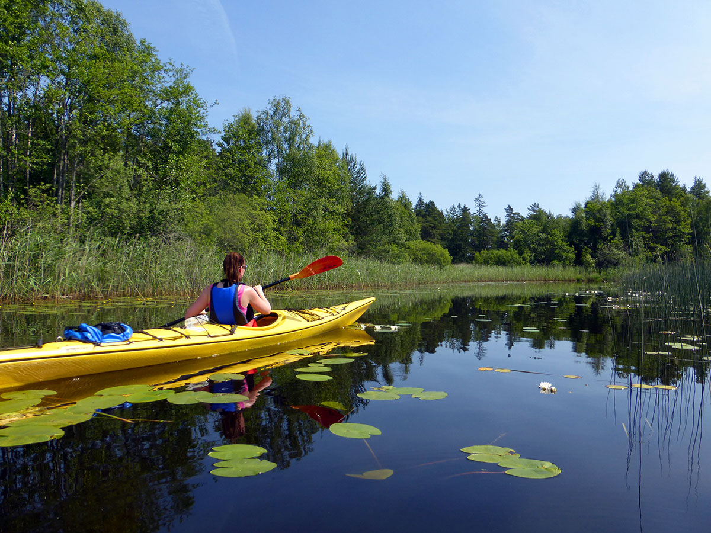

Småland
Wilayah Småland dapat dicapai dengan berkendara relatif singkat dari Belanda. Ini adalah Swedia seperti yang Anda lihat di televisi. Rumah merah dengan daun jendela putih, hutan tak berujung, dan banyak danau super halus. Di Småland Anda bisa tersesat di jalur pendakian yang tak ada habisnya, pergi berkano dan berkemah liar di pulau Anda sendiri, menikmati makanan lezat, dan mengunjungi kota Växjö. Småland sebenarnya Swedia untuk pemula, jika Anda suka di sini, maka Anda pasti akan menikmati Swedia juga!
